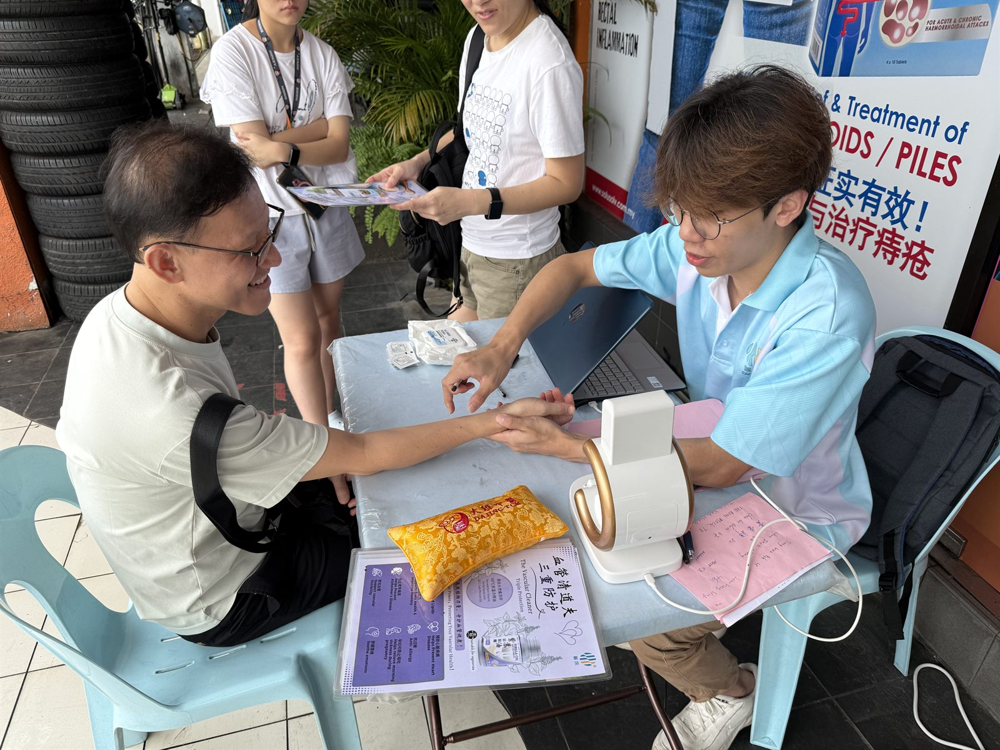
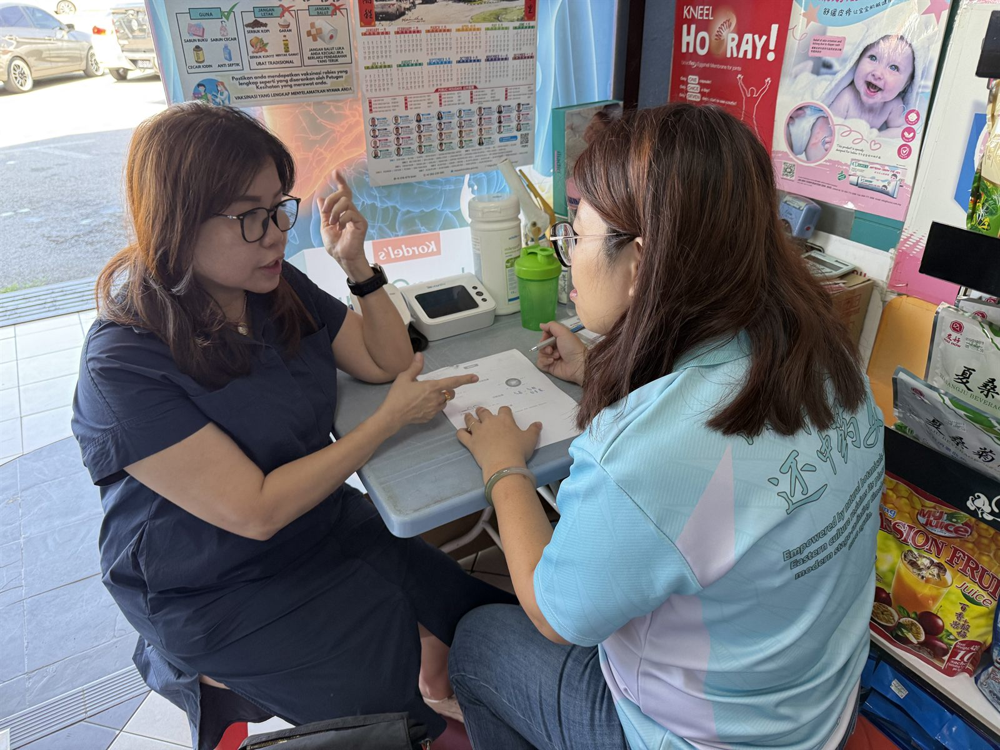
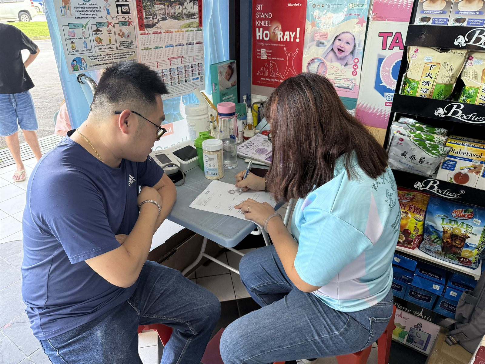
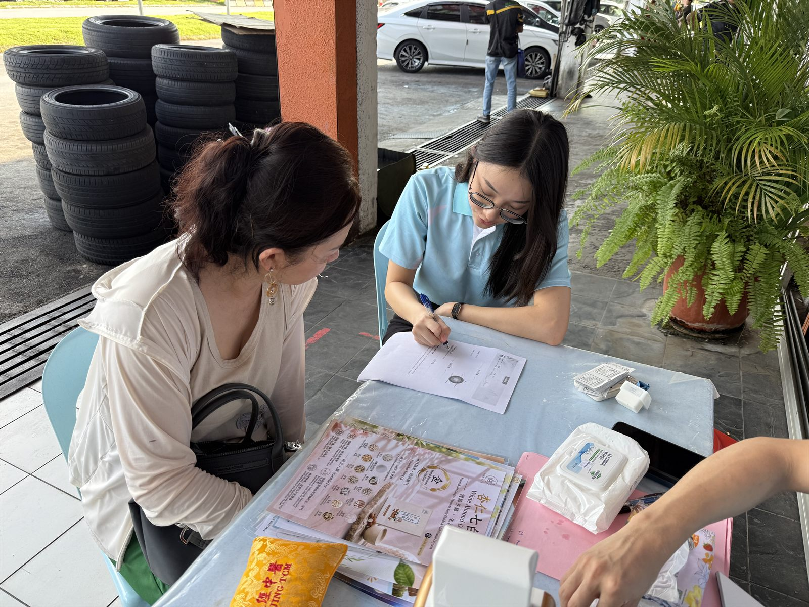
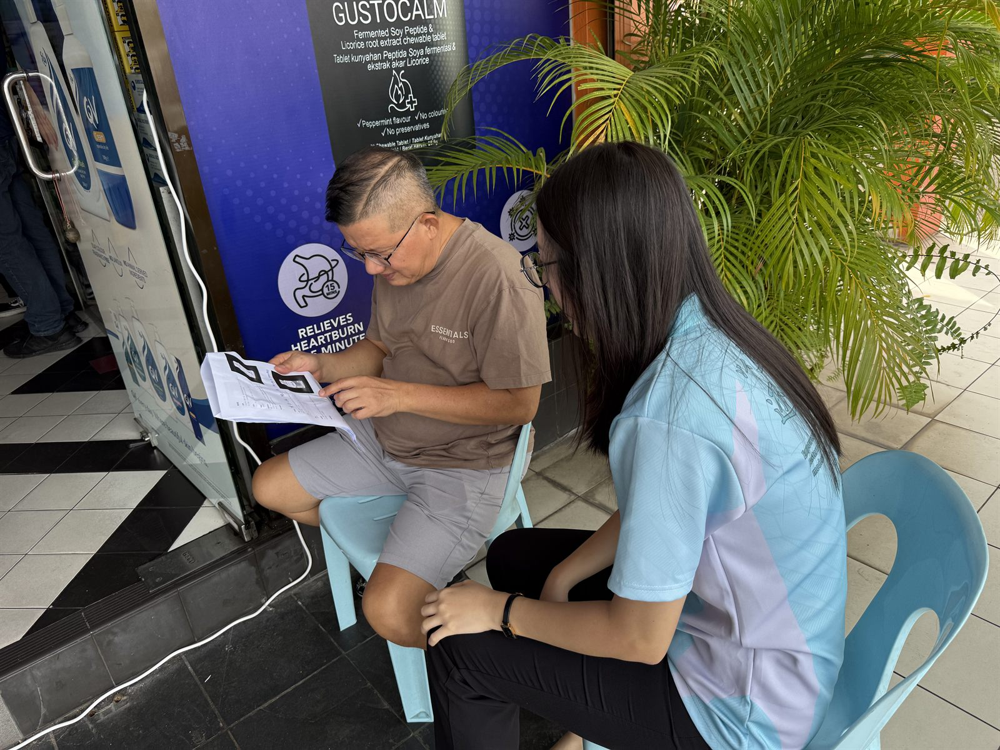
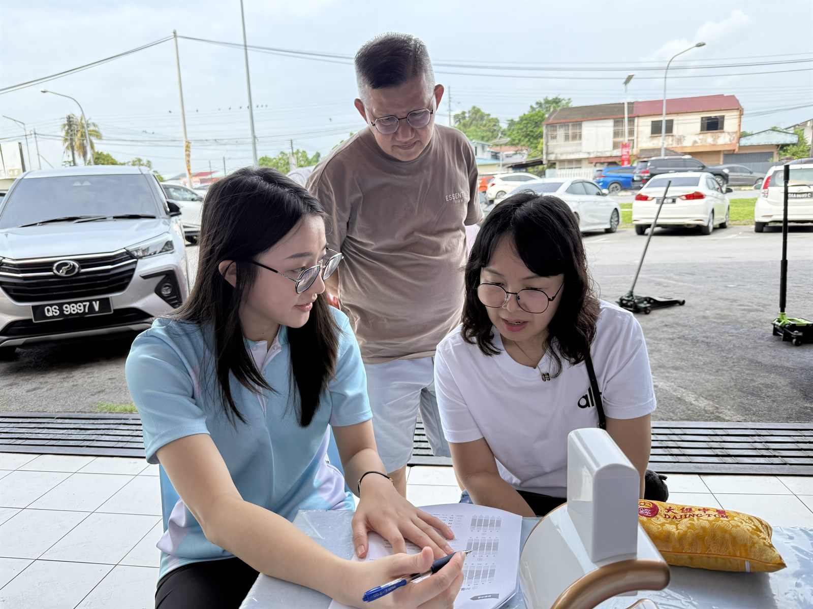
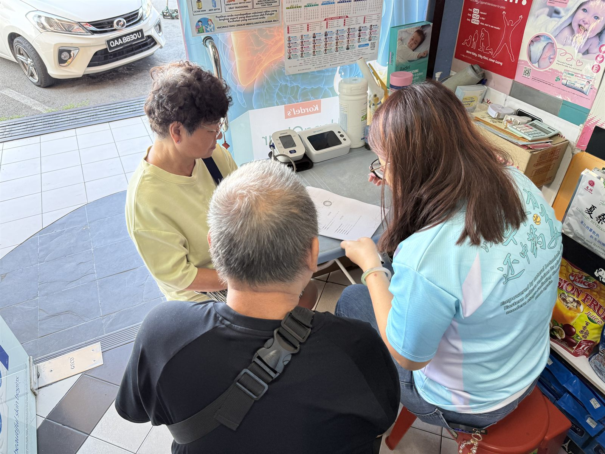
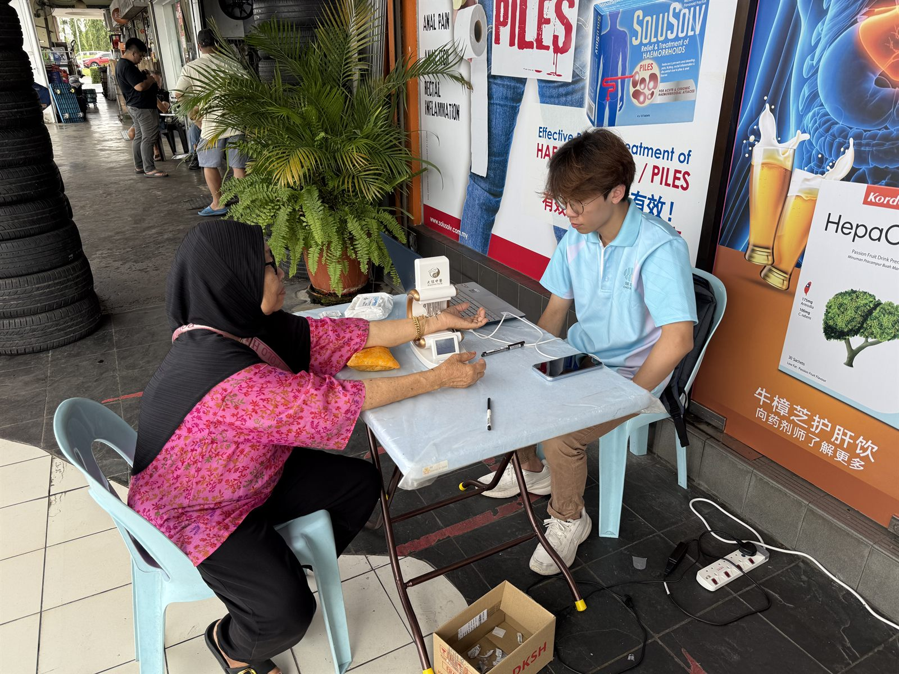
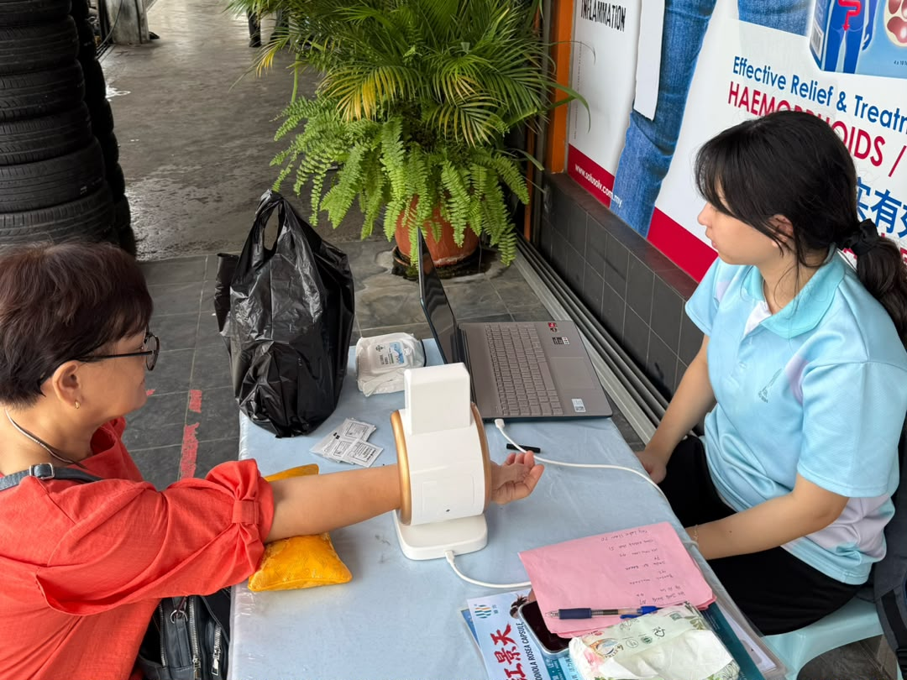
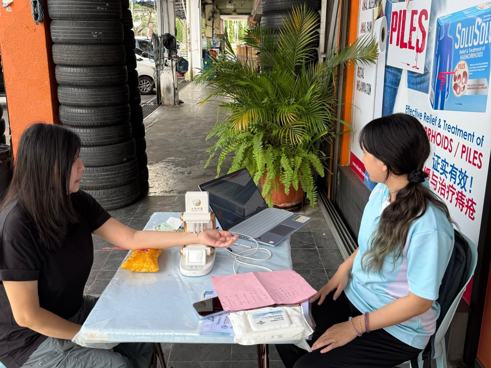

Herb and Fashion 草本时尚
Kuching Pop-up Event古晋快闪活动
This two-day health event, hosted at Sing Lee Pharmacy in Kuching, integrates modern technology with Traditional Chinese Medicine. The event features a smart automated device to provide consumers with quick and complimentary "smart TCM pulse reading" services. Once the reading is complete, on-site personnel will analyze the generated computer data to conduct a one-on-one explanation of the 9 TCM Body Constitutions, providing targeted lifestyle and wellness recommendations.
本活动为期两天，特别驻扎于古晋信利西药行（Sing Lee Pharmacy），是一场结合现代科技与传统中医的健康体验活动。活动现场配备智能自动把脉仪，专门为消费者提供免费且快捷的“智能中医把脉”服务。把脉完成后，现场人员将分析生成的电脑数据，进行一对一的中医九大体质讲解，并提供针对性的日常养生与健康建议。










